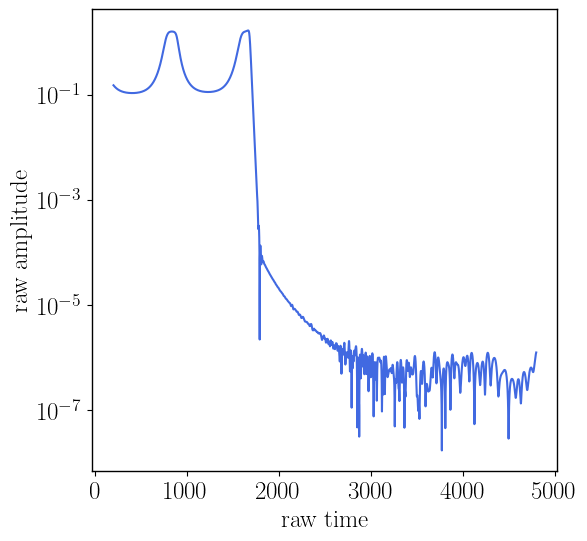
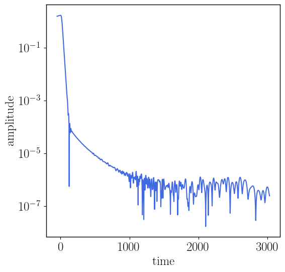
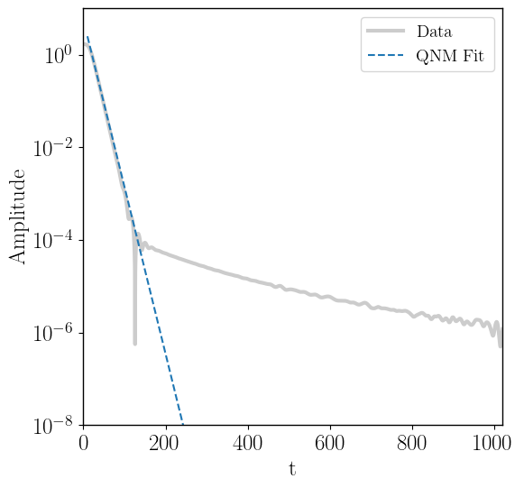
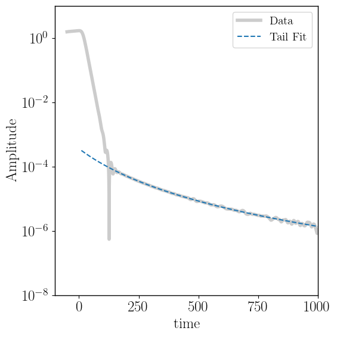
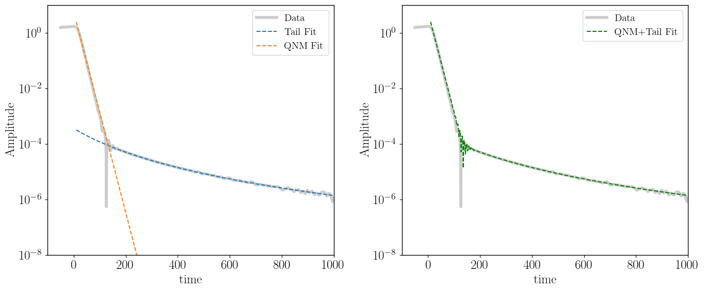

Post-merger late-time tail analysis example
This example is based on the paper “Phenomenology and origin of late-time tails in eccentric binary black hole mergers” by Islam, Faggioli, Khanna, Field, van de Meent and Buonanno.
Here, we inspect waveforms produced by merging eccentric binary black holes (BBH). These waveforms are all generated using black hole perturbation theory.
The trajectories are described by the dynamics of the point-particle orbiting the Kerr black hole using effective-one-body formalism: http://arxiv.org/abs/gr-qc/9811091, http://arxiv.org/abs/gr-qc/0001013, http://arxiv.org/abs/2405.19006. These trajectories are then fed into the time-domain Teukolsky solver developed by Gaurav Khanna and collaborators: http://arxiv.org/abs/gr-qc/0703028, http://arxiv.org/abs/0803.0317, http://arxiv.org/abs/0803.0317, http://arxiv.org/abs/1003.0485, http://arxiv.org/abs/1108.1816, http://arxiv.org/abs/arXiv:2010.04760.
[1]:
import numpy as np
import matplotlib.pyplot as plt
import matplotlib
import matplotlib.pyplot as plt
from matplotlib import cm
import matplotlib.patches as mpatches
matplotlib.rcParams['mathtext.fontset'] ='stix'
matplotlib.rcParams['font.family'] = 'STIXGeneral'
matplotlib.rcParams['axes.linewidth'] = 1 #set the value globally
plt.rcParams["figure.figsize"] = (6,6)
plt.rcParams['font.size'] = '18'
plt.rc('text', usetex=True)
1. Import gwtails
[2]:
import sys
# provide a path for the gwtails package
PATH_TO_GWTAILS = "/data/tislam/works/tails/pool/gwtails/"
sys.path.append(PATH_TO_GWTAILS)
import gwtails
from gwtails import PostMergerAmplitudeFit
[3]:
help(PostMergerAmplitudeFit)
Help on class PostMergerAmplitudeFit in module gwtails.tails:
class PostMergerAmplitudeFit(builtins.object)
| PostMergerAmplitudeFit(filename, qinput=1000, throw_junk_until_indx=None, qnm_fit_window=None, tail_fit_window=None, crossterm_fit_window=None, fit_tail_envelop=False)
|
| Class to fit post-merger data
|
| Methods defined here:
|
| __init__(self, filename, qinput=1000, throw_junk_until_indx=None, qnm_fit_window=None, tail_fit_window=None, crossterm_fit_window=None, fit_tail_envelop=False)
| filename: name of the waveform data file (Required); should be in .txt or .dat format;
| columns should have the following format: time, h_real, h_imag, ..
|
| qinput: mass ratio values with qinput>=1
| throw_junk_until_indx: last index until which data should be discarded before applying qnm or tail fits;
| Default is None
|
| tail_fit_window: provide a window for fitting tail coefficients only;
| e.g. [200,800] (in M);
| Default is None (in that case no tail fit is performed)
| qnm_fit_window: provide a window for fitting qnm coefficients only;
| e.g. [200,800] (in M);
| Default is None (in that case no qnm fit is performed)
| crossterm_fit_window: provide a window for fitting cross-term coefficients only;
| e.g. [100,200] (in M);
| Default is None (in that case no cross-term fit is performed)
|
| fit_tail_envelop: Whether the data has oscillatory tail behaviour - in which case, we fit the tail envelop;
| Default is False.
|
| freq(time, h, s=0.1)
|
| plot_interpolated_amplitude(self)
|
| plot_raw_amplitude(self)
|
| qnm_and_tail_fit_func(self, t, phi_tail, omega)
|
| qnm_fit_func(self, t, Aqnm, tau)
|
| tail_fit_func(self, t, Atail, c, n)
|
| ----------------------------------------------------------------------
| Data descriptors defined here:
|
| __dict__
| dictionary for instance variables (if defined)
|
| __weakref__
| list of weak references to the object (if defined)
2. Analyze post-merger waveforms
[4]:
# import data file
# this is for a merging binary with
# mass ratio q=1000, eccentricity e=0.9 and spin a=0.0
file = 'hm02_ecc_p09_e09_a00_q_1000.dat'
[5]:
# pass it too gwtails without doing anything
# we will check the raw data first
rd = PostMergerAmplitudeFit(filename=file)
Data read. Shape of data : (11,11500)
[6]:
rd.plot_raw_amplitude()

[7]:
# plot the waveform amplitude after making sure that the peak at t=0
# and interpolating on a new time grid
rd.plot_interpolated_amplitude()

[8]:
# make sure to throw the initial orbits for the post-merger fits
rd = PostMergerAmplitudeFit(filename=file,
throw_junk_until_indx=1200)
# and we are done
rd.plot_interpolated_amplitude()
Data read. Shape of data : (11,11500)

[9]:
# now pass it again to gwtails with fit options
rd = PostMergerAmplitudeFit(filename=file,
throw_junk_until_indx=1100, # initial indices to remove before analyzing post-merger data
qnm_fit_window=[20,70], # time window to fit qnm
tail_fit_window=[200,1000], # time window to fit tails
crossterm_fit_window=[30,400]) # time window to fit the crossterms
Data read. Shape of data : (11,11500)
[10]:
rd._plot_qnm_fit()

[11]:
rd._plot_tail_fits()

[12]:
rd._plot_all_fits()

[13]:
# print interesting fit params
rd._print_all_fits()
Atail : 3.616772118e+05
c : 2.816224627e+02
n : 3.671228685e+00
Aqnm : 5.773862021
tau : 12.037748086
[ ]: